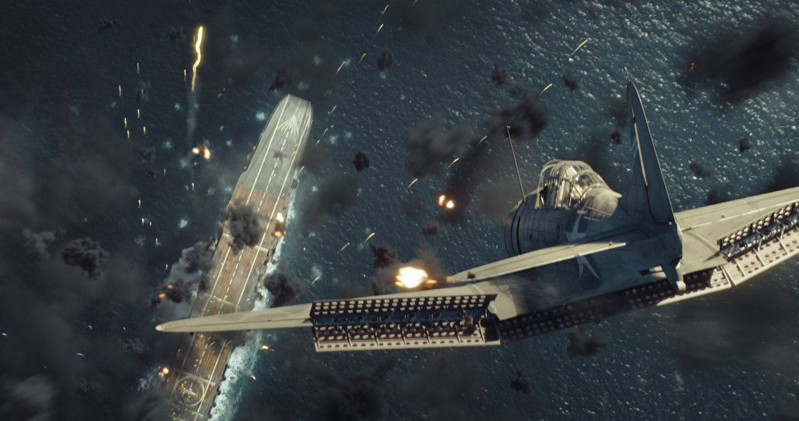
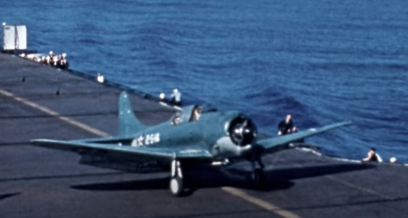
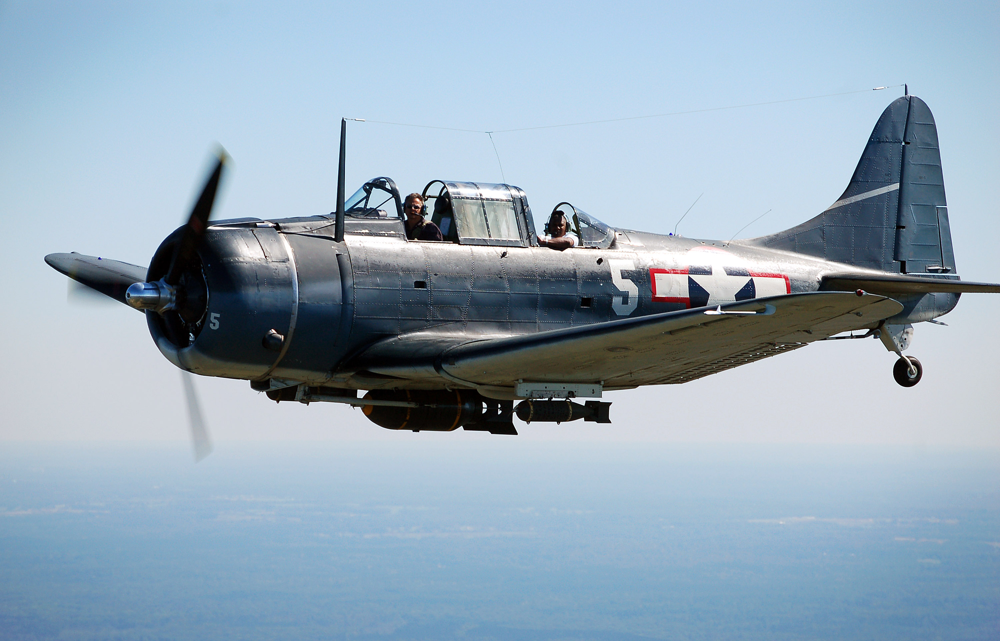

O Douglas SBD Dauntless (SBD é a sigla de Scout Bomber Douglas), foi o mais famoso dos bombardeiros da Marinha dos Estados Unidos (US Navy) durante a Segunda Guerra Mundial e talvez o mais importante bombardeiro de mergulho de toda a guerra. Foi o único avião de combate dos Estados Unidos que se manteve nas linhas da frente desde o início da Segunda Guerra Mundial até ao seu final e foi considerado a arma aérea mais destrutiva da US Navy, afundando durante a Guerra mais de 300.000 toneladas de navios inimigos, onde se incluem, os cinco porta-aviões afundados na batalha do Mar de Coral e Midway e quinze outros navios de guerra da Marinha Imperial Japonesa. Este desempenho valeu-lhe o apelido de “Slow, But Deadly!”. Quando o seu substituto, o Curtiss SB2C Helldiver, foi introduzido em combate em novembro de 1943 já pouco restava da Marinha Imperial japonesa. Após a guerra, o Corpo de Fuzileiros Navais dos EUA continuou a usar o SBD, até à década de 1950, e a Força Aérea Francesa usou-o na guerra da Indochina. No entanto, contrariamente ao que seria suposto, quando foi introduzido em combate era já considerado obsoleto.
| Ano | 1938 |
|---|---|
| Pais de Origem | EUA |
| Tripulação | 1 |
| Motor | 1 x Allison V-1710-81 |

O conceito de bombardeiro de mergulho (aeronave de ataque projetada para largar uma
ou mais bombas
sobre
um alvo mergulhando sobre ele num ângulo acentuado) foi
desenvolvido nos anos que antecederam o
inicio
da Segunda Guerra Mundial,
marcando o surgimento do que hoje designamos por bombardeamentos de
precisão.
Este conceito tornou-se particularmente atraente para o combate aéreo naval, pois
possibilitava a
realização de ataques a embarcações inimigas em movimento a partir
do ar.
Nos EUA, a materialização deste conceito teve o seu expoente máximo no SBD
Dauntless projetado e
construído pela Douglas Aircraft Company para a US Navy.
A história de Dountless remonta ao ano de 1932, quando o engenheiro e projetista
aeronáutico John
Knudsen “Jack” Northrop depois de ter saído da Douglas Aircraft
e criado a sua própria companhia em
1929, a Avion Corporation, que foi forçado a
vender à United Aircraft and Transport Corporation em
1930,
fundou em 1932
com o apoio de Donald Douglas da Douglas Aircraft a Northrop
Corporation em El
Segundo na
Califórnia.
Quando em 1939 a Northrop Corporation, em El Segundo, se tornou uma subsidiaria
da
Douglas
Aircraft em 1939, “Jack” Northrop fundou com Moye Stephens, em
Hawthorne, California, uma nova
companhia
com o mesmo nome, mas completamente
independente da Douglas onde seriam desenvolvidos os posteriores
projetos da
Northrop.
Até 1932, “Jack” Northrop, projetou e construiu alguns monoplanos,
monomotores para uso civil entre
os
quais, o Northrop Alpha em 1929, o Northrop Beta
(protótipo) em 1931, o Northrop Gamma em 1932 e o
Northrop Delta, em 1933. Estas
aeronaves introduziram várias inovações para a sua época nomeadamente
a
sua
construção totalmente em metal e uma aerodinâmica avançada conseguida pela
introdução de
tecnologias
construtivas como os filetes de asas desenvolvidos no
Guggenheim Aeronautical Laboratory, e a
fuselagem de asa reforçada e multi-soldada
de autoria própria da Northrop, que mais tarde foi
utilizada
com sucesso no Douglas
DC-2 e no Douglas DC-3. A elevada velocidade, para os padrões da época,
destas
aeronaves, robustez e fuselagens amplas, adaptáveis para o transporte de cargas e
passageiros,
contribuíram para que estas aeronaves fossem largamente adotadas
para o transporte de passageiros e
correio, durante a década de 1930.
Quando em 1934, o Bureau of Aeronautics (BuAer) anunciou um concurso para desenvolver um novo bombardeiro de mergulho especializado destinado a substituir os inúmeros tipos de aeronaves utilizadas nesta função pela Marinha Norte Americana, a Northrop submeteu à competição uma proposta para o desenvolvimento de um monoplano de asa baixa totalmente metálico com um compartimento de carga no interior da fuselagem. O outro concorrente, a Brewster, viu a sua proposta rejeitada pelo BuAer, que atribuiu à Northrop o contrato para a construção de um protótipo a designar por XBT-1. A liderança do projeto de desenvolvimento e construção do protótipo foi entregue a Edward H. Heinemann sob a supervisão direta de “Jack” Northrop, tendo o XBT-1 ficado concluído para testes de voo em agosto de 1935. O protótipo possuía inúmeras inovações e soluções avançadas que só haviam sido sido aplicadas em projetos de aeronaves a partir de 1934. Era uma uma aeronave de asa baixa toda em metal, com o trem de aterragem principal que retraia para uma carenagem de grandes dimensões na parte inferior das asas, deixando as partes inferiores das rodas semi-descobertas. Percebendo que a robustez era essencial num bombardeiro de mergulho, Heinemann construiu as asas com uma estrutura “favo de mel” que fora pela primeira vez utilizada no Northrop Alpha Mail e mais tarde nas primeiras aeronaves Douglas da serie DC (Douglas Commercial). 
A estrutura da asa em favo de mel era naquela época uma ideia revolucionária, e que
permitia
criar
uma asa de monoplano limpa, sem suportes externos e cabos de
sustentação. No entanto, a
estrutura em
favo de mel não permitia um mecanismo de
dobra da asa essencial nas aeronaves que operavam a
partir
de porta aviões. Para
compensar de alguma forma a falta de dobramento das asas, Heinemann tentou
reduzir
o tamanho da aeronave ao máximo. A envergadura do protótipo era de apenas 12,65m,
o
comprimento era de 9,6m, a altura era de 3,8 m.
O XBT-1 realizou o primeiro voo em
19 de agosto de 1935 com um motor radial Pratt & Whitney
(P&W)
R-1535-66 Twin
Wasp Júnior de 14 cilindros arrefecido a ar com uma potência de 700cv que movia
uma
hélice de duas lâminas, com o qual atingiu uma velocidade de máxima é de 296 km/h
que era
aceitável
para a época mas em dezembro de 1935, com um novo motor
P&W R-1535-94 Twin Wasp Junior de 825
cv, a
velocidade máxima aumento
u para os 341 km/h.
A aeronave poderia transportar uma bomba de 453 kg a uma altitude de 6860m e, para facilitar a travagem e recuperação de um mergulho, tinha flaps split perfurados com orifícios redondos, que possibilitavam que a sua abertura pudesse ser larga o suficiente para reduzir a velocidade de mergulho sem reduzir muito a sustentação. Satisfeita com os resultados dos testes, em setembro de 1936 a US Navy encomendou um lote de 54 bombardeiros BT-1, que se tornaram parte dos esquadrões VB-5 e VB-6 dos porta-aviões USS Yorktown e USS Enterprise para testes operacionais. Porém os testes operacionais revelaram inúmeras características de voo insatisfatórias a baixa velocidade, nomeadamente instabilidade direcional, baixa eficiência dos ailerons e lemes e uma tendência para entrar em parafuso com o aumento acentuado da potência do motor. Estas deficiências foram responsáveis por vários acidentes e desnecessário será dizer que o BuAer não pretendia adquirir mais BT-1. Felizmente para a Northrop, o contrato do XBT-1, incluía o desenvolvimento e construção de um segundo protótipo, o XBT-2. Assim, a Northrop teve oportunidade de resolver os problemas do bombardeiro de mergulho para obter o próximo contrato de produção.

A ideia inicial de Heinemann, é que os problemas do BT-1 eram o resultado de uma
insuficiente
relação
peso/potência e por isso começou por substituir o motor, por um
Wright XR-1820-32 Cyclone de 1000cv
e a
hélice de duas pás por uma de três pás
de passo variável.
Mas, após a implementação desta solução, as prestações da
aeronave nos testes continuavam
insatisfatórias e as características de voo a baixa
velocidade continuavam problemáticas.
Em busca de soluções a Northrop enviou o
protótipo XBT-2 para Langley, onde a NACA tinha um túnel de
vento grande o
suficiente para testar uma aeronave em tamanho real.
Como resultado da pesquisa, a
NACA emitiu uma série de recomendações para o aprimoramento da
máquina, no
trem de aterragem, nos ailerons e na empenagem nomeadamente no estabilizador
vertical.
Nos meses seguintes Heinemann realizou testes intensivos de 21 variantes de
empenagem e 12
diferentes
perfis de ailerons até encontrar uma configuração
satisfatória. Quando tal aconteceu, cerca de seis
meses depois, já “Jack” Northrop
tinha cedido à Douglas o controlo total da sua empresa, e o
protótipo
em
desenvolvimento passara a designar-se XSBD-1.
Seguindo as recomendações da NACA, o XSBD-1 foi aerodinamicamente refinado, um trabalho claramente
visível no redesenhado trem de aterragem, tornado totalmente retrátil. As pesadas carenagens do trem de
aterragem do BT-1 foram removidas e agora as
pernas do trem dobravam totalmente no plano transversal
recolhendo para dentro de nichos na superfície inferior das asas com as rodas a recolherem para
nichos
na fuselagem inferior. A canópia em forma de estufa foi também redesenhada, tal como o painel de
instrumentos do piloto.
Com as modificações
introduzidas, os resultados dos novos testes foram satisfatórios e o BuAer
acabou
por colocar uma encomenda para um lote de produção de 144 SBD-1.
Descrição do SBD Dauntless O SBD Dauntless era um monomotor cantilever de asa baixa, trem de aterragem retrátil e uma cabina de dois lugares em tandem coberto por uma canópia tipo estufa de plexiglass com para-brisas a prova de bala. SBD-1, do VMB-1 (US Marine Corps), 1941 A fuselagem, totalmente metálica possuía uma estrutura semi-monocoque com revestimento de folha de alumínio rebitada. A frente da fuselagem era ocupada pelo motor, duas metralhadoras montadas sobre o capô com respetivas caixas de munições, e o tanque de óleo, separados, da cabina logo atras, por uma antepara a prova de fogo. Na parte dianteira da cabina o cockpit do piloto cujo assento possuía um encosto blindado, para alem dos instrumentos de voo possuía uma bússola naval e um piloto automático.
O operador de rádio e navegador posicionava-se atrás do piloto voltado para a retaguarda onde operava uma metralhadora gémea (as primeiras versões possuíam apenas uma metralhadora) num suporte móvel que disparava para o hemisfério traseiro da aeronave. Mais atrás da cabina estava localizado o equipamento de oxigênio, a estação de rádio, e uma balsa de borracha insuflável com alimentos e suporte de vida em caso de amaragem de emergência. A seção da cauda da fuselagem e a seção central eram herméticas, de forma a garantir alguma flutuabilidade numa situação de amaragem forçada.
As asas de estrutura totalmente metálica e forma trapezoidal possuía um perfil NACA era montada a partir de secções longitudinais estreitas separadas por anteparas verticais (um tipo de estrutura desenvolvido por Northrop e usado em varias aeronaves contemporâneas da Douglas como o DC-1 e DC-3. Os flaps de travagem aerodinâmica foram instalados ao longo de todo o bordo de fuga da asa, e as suas seções central e inferior (que operavam como flaps durante a descolagem e aterragem) podiam dobrar para baixo num um ângulo máximo de 42 graus, enquanto e as seções superiores podiam virar para cima num angulo máximo de 37,5 graus. Ambas as secções moveis dos flaps possuíam três filas de orifícios circulares em toda a sua extensão que garantiam o eficaz funcionamento do estabilizador e lemes de profundidade mesmo durante um mergulho com os flaps totalmente abertos. Os ailerons de perfil assimétrico cobertos de tecido dopado eram montados na extremidade do bordo de fuga das asas. SBD-2 A empenagem de construção totalmente metálica possuía uma configuração típica e simétrica, com as superfícies de controlo (leme e lemes de profundidade) revestidos em tecido dopado.
O trem de aterragem tinha uma configuração padrão para a época com as engrenagens principais retrateis e a roda traseira fixa. As engrenagens principais recolhiam para nichos nas asas até ao eixo central na fuselagem onde eram recolhidas as rodas que ficavam a descoberto. O gancho naval de retenção naval foi montado na parte inferior da fuselagem traseira. Dependendo da variante, o SBD foi equipado com um motor Wright R-1820-32 Cyclone de 1000cv, e posteriormente com motores Wright R-1820-50 ou Wright R-1820-60 com potência de 1200cv. Todos foram equipados com uma hélice de três pás Hamilton-Standard, ou Hamilton-Standard Hydromatic.